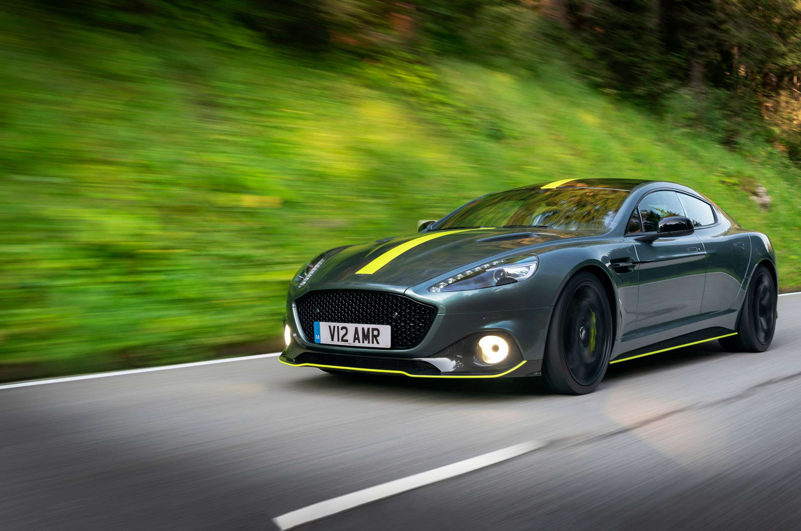
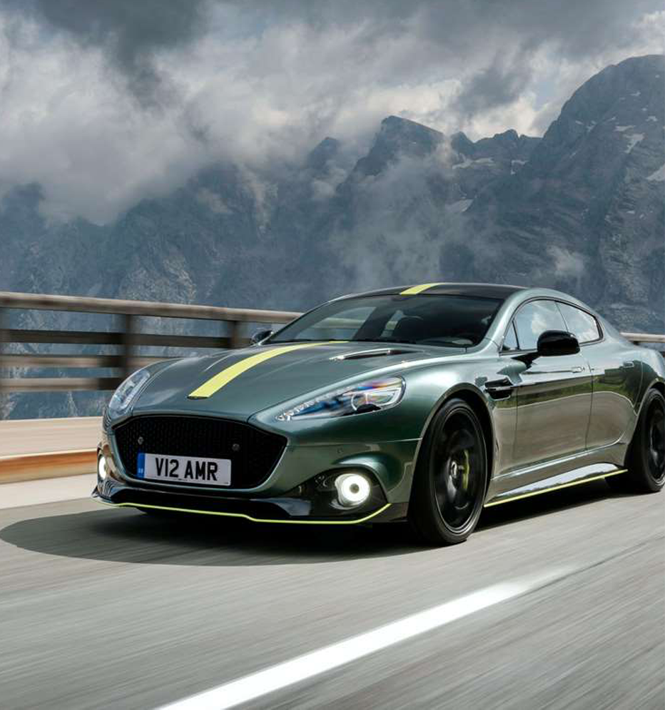
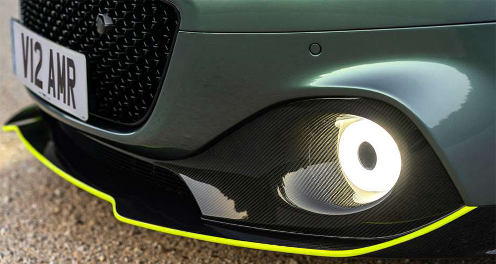
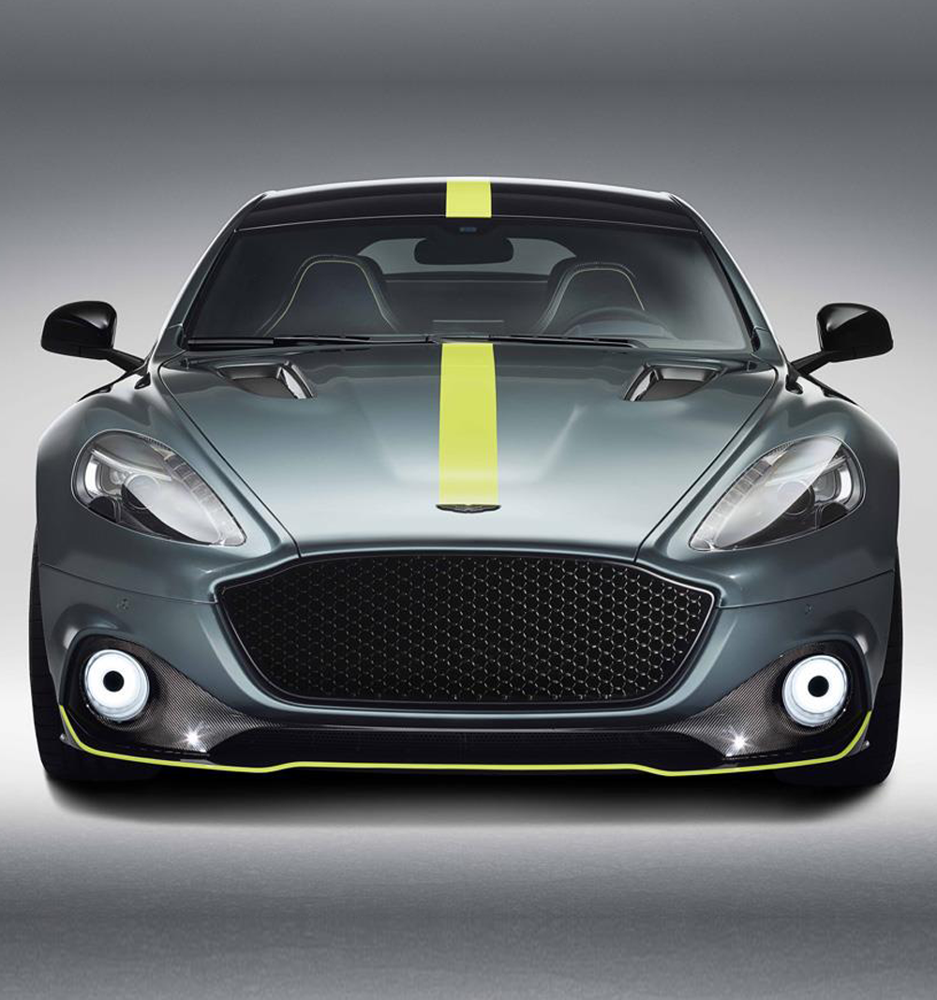
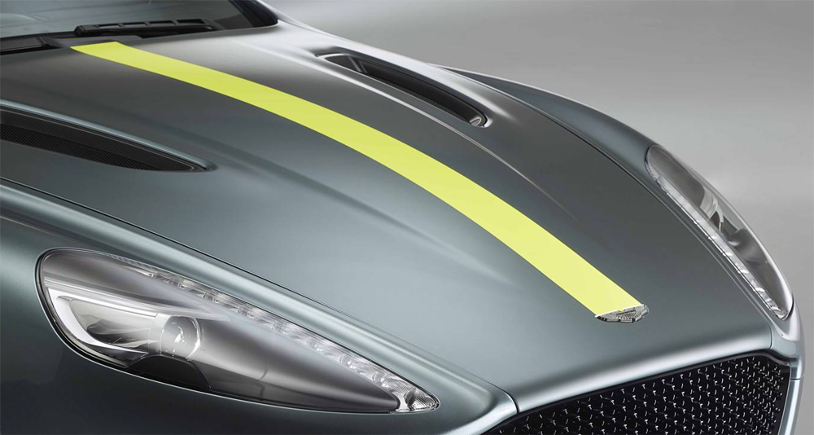
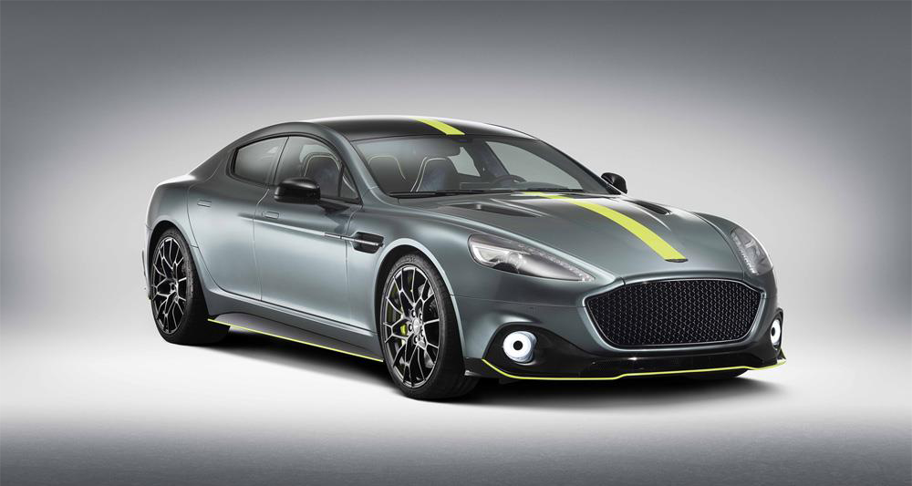
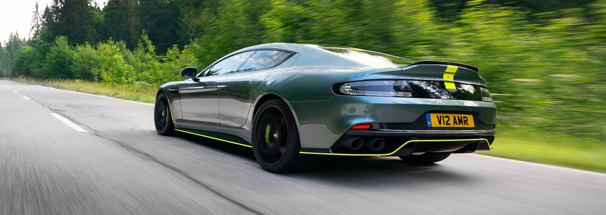
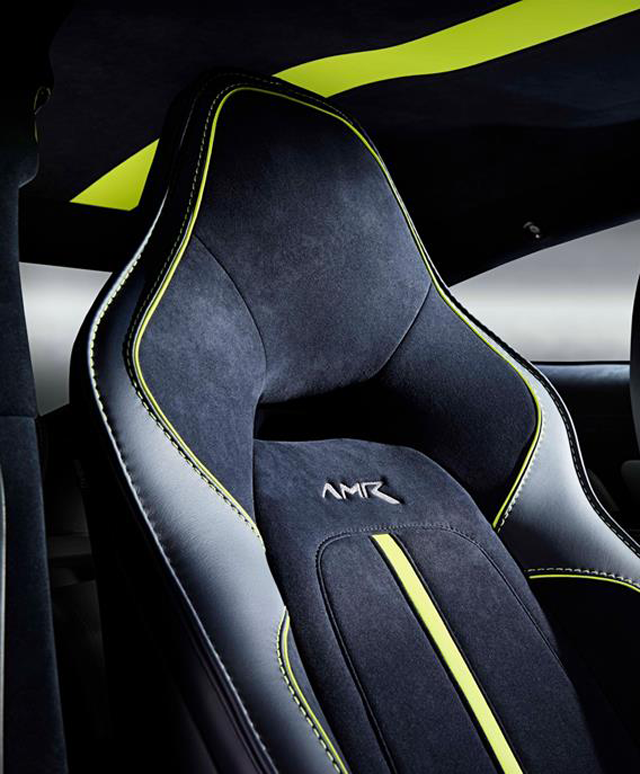
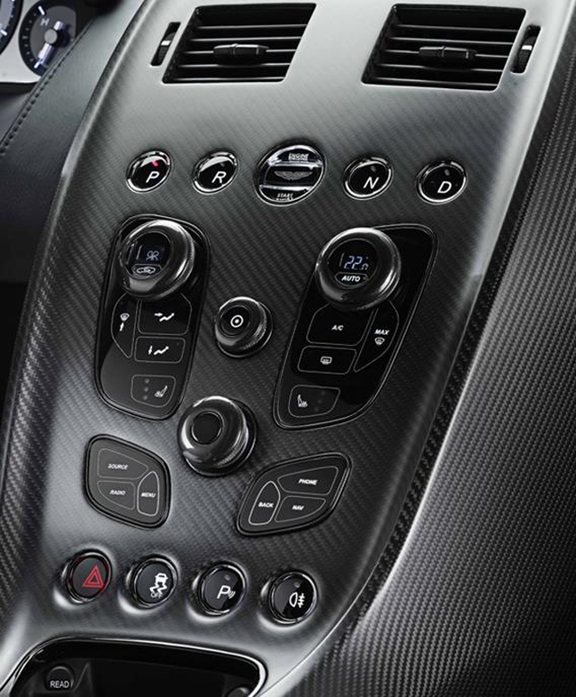

<!DOCTYPE html>
<html lang="en">
<head>
    <meta charset="UTF-8">
    <meta name="viewport" content="width=device-width, initial-scale=1.0">
    <meta http-equiv="X-UA-Compatible" content="ie=edge">
    <title>RAPIDE AMR</title>
    <link rel="stylesheet" href="css/import.css">
    <script src="https://ajax.googleapis.com/ajax/libs/jquery/1.12.4/jquery.min.js"></script>
    <script src="https://cdnjs.cloudflare.com/ajax/libs/waypoints/2.0.3/waypoints.min.js"></script>
    <script src="js/counterup.js"></script>
    <script src="https://kit.fontawesome.com/ca85dab293.js" crossorigin="anonymous"></script>
    <script>
        $(document).ready(function(){
            $('.counter').counterUp();
        });    
    </script>
</head>
<body>
    <div class="wrap sub sub5">
        <header>
            <h1>toplogo</h1>
            <nav>
                <input type="checkbox" id="overlay-input" class="mui">
                <label for="overlay-input" id="overlay-button" class="fas fa-bars mui fa-2x"></label>
                <div  id="overlay">
                    <ul>
                        <li><a href="index.html">HOME</a></li>
                        <li><a href="sub1.html">DBX</a></li>
                        <li><a href="sub2.html">VANTAGE</a></li>
                        <li><a href="sub3.html">DB11</a></li>
                        <li><a href="sub4.html">DBS SUPERLEGGERA</a></li>
                        <li><a href="sub5.html" class="active">RAPIDE AMR</a></li>
                        <li><a href="sub6.html">ASTON MARTIN VALKYRIE</a></li>
                    </ul>
                </div>
            </nav>
        </header>
        <section>
            <div class="spectArea">
                <h2></h2>
                <dl>
                    <dt><strong class="counter">205</strong> <small>MPH</small></dt>
                    <dd>TOP SPEED</dd>
                </dl>
                <dl>
                    <dt><strong class="counter">595</strong> <small>BPH</small></dt>
                    <dd>POWER</dd>
                </dl>
                <dl>
                    <dt><strong class="counter">4.2</strong> <small>S</small></dt>
                    <dd>0~62MPH</dd>
                </dl>
            </div>
            <div class="mainText">
                <h2><small>RAPIDE AMR</small><br>A FOUR-DOOR WORTHY OF A RACING TEAM</h2>
                <p>Rapide AMR represents the ultimate evolution of a spectacular & versatile sports car. With enhanced performance, sharperdynamics and more powerful design language, Aston Martin has taken Rapide to new and exciting extremes.</p>
                <p>Drawing inspiration from the concept car unveiled to great acclaim at the 2017 Geneva Motor Show, Rapide AMR further enhances thischarismatic four-door sports car. Incorporating a comprehensive suite of power, chassis and styling upgrades - plus a new interior treatment.</p>
                <p>Official government fuel consumption figures in Litres/100 km (mpg): Urban 19.5 (14.5); Extra urban 9.5 (29.7);Combined 13.2 (21.4); CO2 emissions: 305 g/km</p>
            </div>
            <ul class="detailIMG">
                <li>
                    
                </li>
                <li>
                    
                </li>
                <li>
                    
                </li>
                <li>
                    
                </li>
                <li>
                    
                </li>
                <li>
                    
                </li>
            </ul>
            <div class="detailText">
                <dl>
                    <dt>BUILT FOR SPEED</dt>
                    <dd>The legendary V12 now puts out 603PS and 630NM of torque, while a new quad exhaust ensures a raucoussound befitting of the AMR badge.</dd>
                </dl>
                <dl>
                    <dt>HARNESSING THE POWER</dt>
                    <dd>To help launch from 0-60mph in just 4.2 seconds (0-100km/h in 4.4 seconds), the Rapide AMR has 21-inchwheels – a first for any Aston Martin – paired with ultra-high performance Michelin Super Sport tyres. Thelarge, forged wheels have a multi spoke design that is not only very stiff but also aids brake cooling.</dd>
                </dl>
                <dl>
                    <dt>CARBON CERAMIC BRAKES</dt>
                    <dd>As standard, the Rapide AMR comes fitted with carbon ceramic brakes. Measuring 400mm at the frontwith six piston calipers and 360mm at the rear with four piston calipers, this is the first time that a Rapidehas been fitted with such stopping power. The carbon ceramic discs are also part of AMR’s ethos to uselightweight components whilst reducing unsprung mass they have a noticeably beneficial effect on thedriving experience.</dd>
                </dl>
                <dl>
                    <dt>AGILE & DYNAMIC</dt>
                    <dd>Rapide AMR’s suspension has also received considerable attention. The new Rapide AMR rides 10mm lowerthan a Rapide S and although the three stage adaptive dampers remain, they have been thoroughly reengineeredto create a car that is more focused, agile and dynamic. Much of this development work has been completed atthe AMR Performance Centre at the Nürburgring.</dd>
                </dl>
            </div>
            <ul>
                <li>
                    
                </li>
                <li>
                    
                </li>
                <li>
                    
                </li>
            </ul>
        </section>
        <footer>
            <h2>footer logo</h2>
            <ul>
                <li><a href="sub1.html">DBX</a></li>
                <li><a href="sub2.html">VANTAGE</a></li>
                <li><a href="sub3.html">DB11</a></li>
                <li><a href="sub4.html">DBS SUPERLEGGERA</a></li>
                <li><a href="sub5.html">RAPIDE AMR</a></li>
                <li><a href="sub6.html">ASTON MARTIN VALKYRIE</a></li>
            </ul>
        </footer>
    </div>
</body>
</html>